Testes de Energia¶
Execução parcial em 24/10/2026
Os testes foram feitos em 24/10/2026, no laboratório da faculdade, sem a LiPo e sem os reguladores de 5 V e 3,3 V montados. A fonte de bancada fez o papel da bateria e dos reguladores, seguindo o roteiro adaptado. Os testes 2.1, 2.2 e 2.4 foram aprovados pelo roteiro adaptado. Ficaram para os testes com a LiPo e a placa montada a curva de tensão da bateria (2.1), a regulação (2.3), a queda no diodo (2.4), o divisor (2.5) e o consumo do ToF e do encoder (2.2).
São cinco testes, os essenciais para confirmar com medição o que o projeto conceitual de energia calculou: quanto cada componente consome, quanto tempo a bateria sustenta o robô e se as tensões e as proteções se comportam como previsto. Os testes 2.3, 2.4 e 2.5 são medidos durante a descarga do 2.1, a cada 10 min, para caber numa única ida ao laboratório.
Tabela 1: Matriz de testes de energia
| ID | Descrição | Data de Início | Data de Conclusão | Responsável | Resultados Esperados | Resultados Obtidos | Aprovação Interna (S/N) | Aprovação do Orientador (S/N) | Observações |
|---|---|---|---|---|---|---|---|---|---|
| 2.1 | Curva de descarga da LiPo com os motores girando (RNF02, RNF03) | 24/10/2026 | 24/10/2026 | Giovana (execução), João Marcos (análise) | Com a LiPo: por pelo menos 30 min, a tensão fica acima do corte de 7,0 V. Com a fonte de bancada (roteiro adaptado): a corrente dos motores fica estável e eles não esquentam. Nos dois casos, a corrente média na bateria fica até 0,56 A (0,43 A do 4.2 mais 30%) e a autonomia estimada passa de 30 min | Emulado com a fonte de bancada a 6,01 V direto nos dois motores, girando livres, por 5 min: a corrente caiu de 54 para 51 mA (média de 52 mA, 26 mA por motor), e os motores não esquentaram. A corrente estimada na bateria, com o ESP32 transmitindo, é de 0,15 A, e a autonomia estimada é de 208 min | S | Aprovado pelo roteiro adaptado. Sem a LiPo, a tensão da bateria não foi medida, e com as rodas livres e sem o peso do robô a corrente fica abaixo da de operação. O teste térmico de 30 min não foi feito por haver uma fonte só. A curva com a LiPo fica para a integração. Figura 8 | |
| 2.2 | Consumo de cada componente (RNF03) | 24/10/2026 | 24/10/2026 | Giovana (execução), João Marcos (análise) | A corrente medida de cada componente fica até 30% acima da prevista no 4.2 (Tabela 1); o motor travado fica abaixo de 1 A, de modo que os dois juntos ficam abaixo do hold de 2,0 A do PTC | Motor N20 a 6,01 V: 26 a 30 mA girando livre e pico de 211 mA com o eixo travado por 2 s (o multímetro ficou em torno de 165 mA). ESP32 pelo VIN a 5,32 V: 42 mA com o código simples e 118 mA transmitindo. Todos abaixo do previsto. O ToF não apareceu na leitura da fonte (o conjunto com o ESP32 deu os mesmos 42 mA) | S | Tabela 3. O motor travado, mesmo somando os dois (0,42 A), fica bem abaixo do hold de 2,0 A do PTC. O ToF e o encoder ficam para medir com o multímetro no 3V3. Figuras 3 a 7 | |
| 2.3 | Regulação das linhas de 5 V e 3,3 V (RF02) | 24/10/2026 | 24/10/2026 | Giovana (execução), João Marcos (análise) | Do início ao fim da descarga, 5 V entre 4,75 e 5,25 V e 3,3 V entre 3,14 e 3,47 V | Não executado | — | Os reguladores não estavam montados; a fonte entregou os 5,32 V e os 6,01 V direto. Fica para a integração | |
| 2.4 | Proteção contra inversão de polaridade e queda do diodo (RNF04) | 24/10/2026 | 24/10/2026 | Giovana (execução), João Marcos (análise) | Com a entrada invertida nada liga; ligado certo, a queda no SS34 fica entre 0,3 e 0,4 V | Fonte a 5,53 V com o ESP32 como carga. Com a entrada invertida, o SS34 bloqueou: 0,000 A na fonte, 0,00 mA no multímetro e o ESP32 apagado. Na polaridade certa, o diodo conduziu e o ESP32 ligou, puxando 0,289 a 0,293 A | S | A queda no diodo não foi medida, porque depende do teste com a LiPo; o firmware segue com os 0,35 V do 4.2. Figuras 1 e 2 | |
| 2.5 | Divisor de tensão da leitura da bateria (RF04) | 24/10/2026 | 24/10/2026 | Giovana (execução), João Marcos (análise) | A razão entre a tensão depois do diodo e a saída do divisor fica em 3,20 ± 2% em toda a descarga | Não executado | — | Divisor 22 kΩ / 10 kΩ (4.2, seção 6.1). Depende do 2.1 com a LiPo |
Fonte: João Marcos e Giovana Martins, 2026.
Tabela 2: Cobertura dos requisitos de Energia
| Requisito | Testes |
|---|---|
| RF02 Regulação das tensões de operação | 2.3 |
| RF04 Medição do nível de carga | 2.4, 2.5 |
| RNF02 Autonomia de operação | 2.1 |
| RNF03 Dimensionamento da capacidade da fonte | 2.1, 2.2 |
| RNF04 Proteções elétricas da fonte | 2.2, 2.4 |
Fonte: João Marcos e Giovana Martins, 2026.
Os requisitos que dependem do robô montado (RF01 alimentação autônoma, RF03 seleção entre as fontes, RF05 sinalização, RF06 troca e recarga e RF07 fixação da fonte) e o alerta e o corte por subtensão feitos pelo firmware são verificados nos testes de integração.
Procedimentos¶
Equipamentos: dois multímetros (um para a corrente, em série, e outro para as tensões), cronômetro, a LiPo 2S de 650 mAh carregada no IMAX B3, os dois motores N20 e a ponte H TB6612FNG.
Segurança: a LiPo nunca é descarregada abaixo de 7,0 V. Se a tensão chegar a 7,0 V, o teste para na hora. A inversão de polaridade (2.4) é feita com o pacote de pilhas AA ou com a fonte de bancada limitada a 100 mA, nunca com a LiPo. O motor travado (2.2) fica no máximo 2 s parado, para não aquecer.
Execução em 24/10/2026: roteiro adaptado¶
No dia do teste só havia o regulador step-up, e a LiPo não tinha chegado. Por isso a fonte de bancada emulou as tensões que os reguladores e a bateria entregariam, e cada componente foi ligado direto nela:
- Polaridade (2.4): fonte a cerca de 5 V (5,53 V no display) com o ESP32 como carga, ligada invertida por no máximo 3 s e depois na polaridade certa.
- Consumo (2.2): um motor N20 direto na fonte a 6,01 V, como se estivesse ligado na bateria, com o multímetro em série medindo só a corrente do motor: primeiro girando livre, para o consumo médio, e depois com o eixo segurado por 2 s, para o pico; o ESP32 pelo VIN a 5,32 V, com um código simples e com um código que transmite; o ToF ligado no pino 3V3 do ESP32.
- Descarga emulada (2.1): os dois N20 direto a 6,01 V, com limite de 2,0 A, girando livres, com a corrente anotada a cada minuto. O teste térmico de 30 min não foi feito, porque havia uma fonte só e ela era usada pelos outros testes. Os motores rodaram 5 min sem esquentar, e os 30 min ficam para a repetição com a LiPo, se for preciso.
2.1 Curva de descarga da LiPo com os motores girando¶
- Carregar a LiPo no IMAX B3 até 8,4 V, com balanceamento, e anotar a tensão em repouso.
- Montar: LiPo → multímetro em série (escala de 10 A) → diodo SS34 → ponte H → dois motores, com as rodas livres. Se a placa da Eletrônica já estiver pronta, ligar o robô inteiro pela placa.
- Acionar os motores pela ponte H com o PWM limitado a 71% (Tabela 8 do 4.2), para não passar dos 6 V dos motores. Com a ESP32 ligada, o consumo dela entra junto.
- Disparar o cronômetro e, a cada 1 min, anotar o tempo, a tensão da bateria e a corrente.
- A cada 10 min (0, 10, 20, 30...), anotar também a tensão depois do diodo, a saída do divisor e, se os reguladores estiverem montados, as linhas de 5 V e de 3,3 V. Essas são as leituras dos testes 2.3, 2.4 e 2.5.
- Seguir por pelo menos 30 min (três tentativas de 10 min). Se der tempo, continuar até 7,0 V para medir a autonomia real.
- Anotar qualquer coisa fora do normal na coluna de observação (motor esquentando, reinício da ESP32, cheiro, ruído).
Alternativa sem a LiPo: fonte de bancada¶
Se a LiPo não chegar a tempo, a fonte de bancada faz o papel da bateria, com dois canais:
- Canal 1 (bateria): começa em 8,4 V, com limite de 2,0 A, e alimenta o SS34, o divisor, o regulador de 5 V com a ESP32 e o de 3,3 V. A tensão é baixada em degraus que seguem a curva típica de uma LiPo 2S (8,40; 8,20; 8,04; 7,90; 7,80; 7,70; 7,62; 7,54; 7,46; 7,36; 7,00 V), cada degrau equivalendo a 10% da carga (65 mAh). A duração de cada degrau sai da corrente média dos 5 primeiros minutos: \(\Delta t\,[\text{min}] = 3900 / I\,[\text{mA}]\).
- Canal 2 (motores): fixo em 6,0 V, ligado direto nos dois motores, sem ponte H. É a tensão nominal do N20 e equivale aos 71% de PWM com 8,4 V, então não precisa de firmware para girar os motores.
As correntes dos dois canais são anotadas separadas (corrente_A e corrente_motores_A). A corrente que sairia da bateria é calculada pela potência dos motores:
Nesse caso a curva de tensão pelo tempo é emulada: a corrente, a regulação, o diodo e o divisor são medidos, e a autonomia sai da corrente média. Como a fonte não estraga abaixo de 7,0 V, dá para seguir até 6,5 V e ver até onde os reguladores seguram e quando o firmware alerta e corta. Quando a LiPo chegar, o teste 2.1 é repetido com ela.
2.2 Consumo de cada componente¶
- Medir em separado, com o multímetro em série na alimentação de cada um:
- um motor girando livre, pela ponte H a 71%;
- um motor com a roda segurada, por no máximo 2 s, na escala de 10 A;
- a ESP32 pelo VIN a 5 V, ligada sem Bluetooth conectado e depois transmitindo;
- um sensor ToF e um encoder a 3,3 V.
- Anotar a tensão de cada um no momento da medição.
- Se o robô estiver montado, medir também a corrente total pela LiPo em operação.
2.3 Regulação das linhas de 5 V e 3,3 V¶
Feito durante o 2.1: a cada 10 min, medir as saídas do buck-boost (5 V) e do LDO (3,3 V) com a carga ligada. Se os reguladores ainda não estiverem montados, o teste fica para a integração.
2.4 Proteção contra inversão de polaridade e queda do diodo¶
- Com as pilhas AA ou com a fonte de bancada limitada a 100 mA, ligar a entrada invertida por poucos segundos e verificar que nada liga e que a corrente fica perto de zero.
- Desligar e ligar na polaridade certa.
- Durante o 2.1, a cada 10 min, medir a tensão antes e depois do SS34. A diferença é a queda do diodo naquela corrente.
2.5 Divisor de tensão da leitura da bateria¶
Feito durante o 2.1: a cada 10 min, medir a tensão depois do diodo e a saída do divisor (o ponto que vai ao ADC). A página calcula a razão entre as duas.
Resultados¶
Como registrar os dados¶
As leituras vão em dois arquivos, que podem ser editados direto no GitHub ou numa planilha salva como CSV, com ; entre as colunas:
docs/dados/energia/descarga-lipo.csv: uma linha por minuto do teste 2.1, com as leituras de 10 em 10 min nas colunas extras. A colunacorrente_motores_Asó é usada com a fonte de bancada; se ela estiver preenchida, o gráfico avisa que a descarga foi emulada;docs/dados/energia/consumo-componentes.csv: a corrente e a tensão medidas de cada componente do teste 2.2. As correntes previstas já estão preenchidas.
Ao salvar, os gráficos e as tabelas abaixo são refeitos. Basta conferir os números e preencher as colunas de resultado e de aprovação da Tabela 1.
Contas feitas a partir das leituras¶
Com as leituras \(V_k\) (V) e \(I_k\) (A) no tempo \(t_k\), a página calcula, entre cada par de leituras seguidas (regra dos trapézios):
em que \(E\) é a energia consumida (J, com o tempo em segundos) e \(Q\) é a carga usada (mAh, com o tempo em horas e a corrente em mA). A autonomia estimada usa a corrente média \(\bar{I}\) e os 80% da capacidade que podem ser usados sem passar do corte (4.2, seção 4.1):
No teste 2.2, a potência de cada componente é \(P = V \cdot I\), e a diferença para o previsto é \((I_{medida} - I_{prevista}) / I_{prevista}\). A comparação usa a margem de 30% adotada no dimensionamento (4.2, Tabela 4).
2.1 Curva de descarga¶
Sem a LiPo, só a corrente dos motores foi registrada. A corrente que sairia da bateria é estimada pela potência dos motores e do ESP32 transmitindo (118 mA a 5,32 V, do 2.2), com o rendimento de 85% da ponte H e dos reguladores (4.2, seção 2), sobre a tensão nominal de 7,4 V:
Com esses 0,15 A, os 80% da carga (520 mAh) durariam cerca de 208 min. O número serve só como limite de baixo: girando livres, sem o peso do robô e sem a ponte H, cada motor puxou 26 mA, contra os 150 mA de cruzeiro do 4.2, e o motor travado deu 211 mA, contra os 800 mA previstos. Até a repetição com a LiPo e o robô montado, o dimensionamento continua usando os 0,43 A do 4.2, que ficam do lado da segurança.
Carregando…
Tabela 3: Consumo previsto e medido de cada componente
Carregando…
Fonte: João Marcos e Giovana Martins, 2026.
Evidências¶
Registros feitos pela Giovana durante a execução. Nas fotos, o display da fonte de bancada mostra a corrente (A) e a tensão (V) entregues; quando aparece, o multímetro está em série, na escala de mA (o sinal negativo é só o sentido das pontas). As Figuras 3 e 4 são quadros do vídeo do teste do motor.
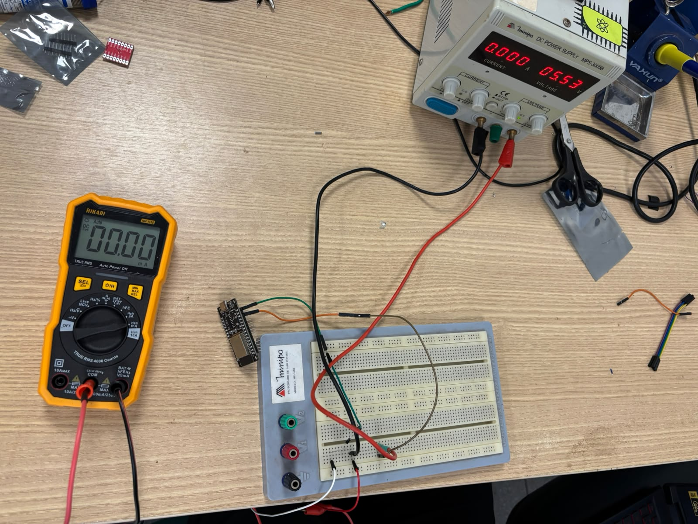
Figura 1: Entrada invertida no teste de polaridade, 0,000 A na fonte e o ESP32 apagado (2.4)
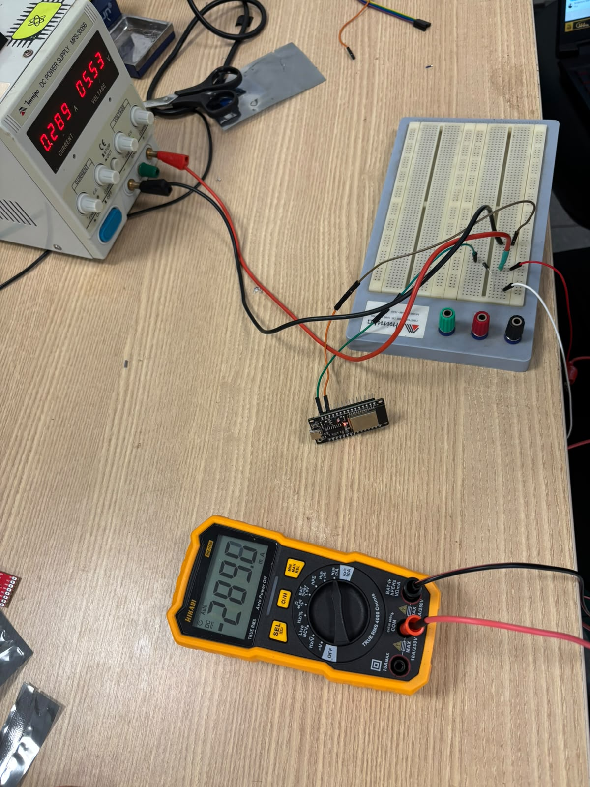
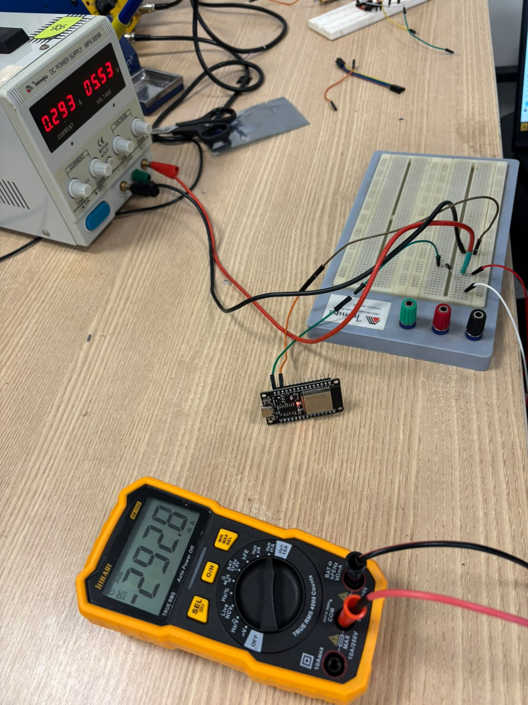
Figura 2: Entrada na polaridade certa, com o ESP32 ligado: 0,289 e 0,293 A na fonte (2.4)
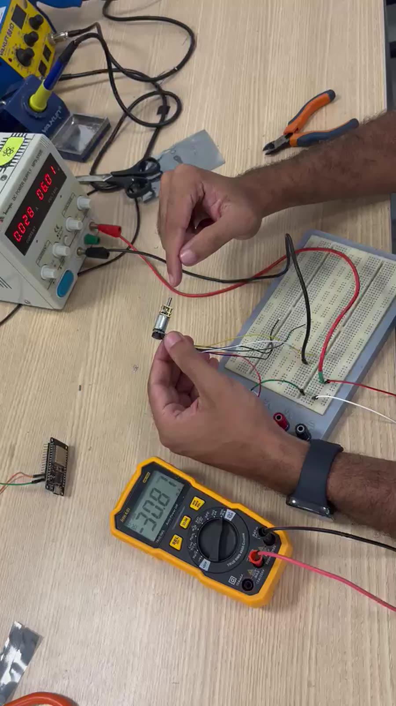
Figura 3: Um motor N20 girando livre a 6,01 V, 0,028 A na fonte (2.2)
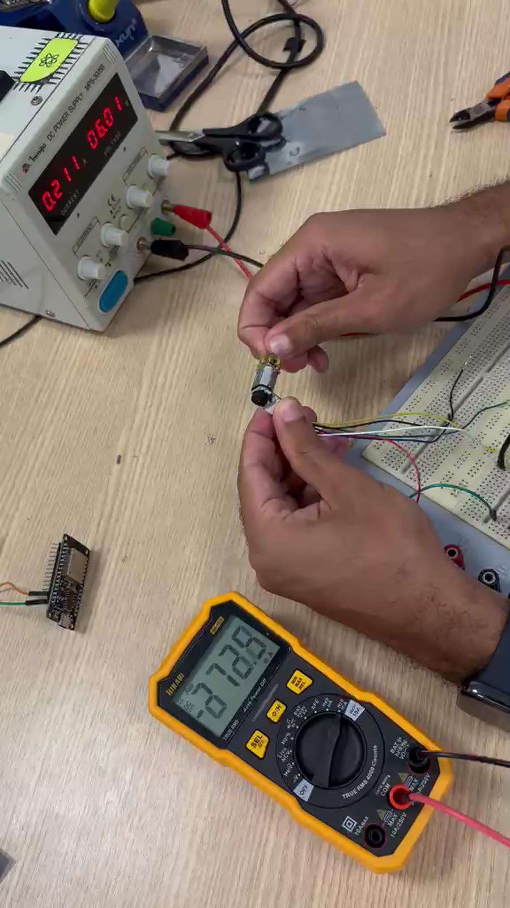
Figura 4: Um motor N20 com o eixo travado, pico de 0,211 A na fonte (2.2)
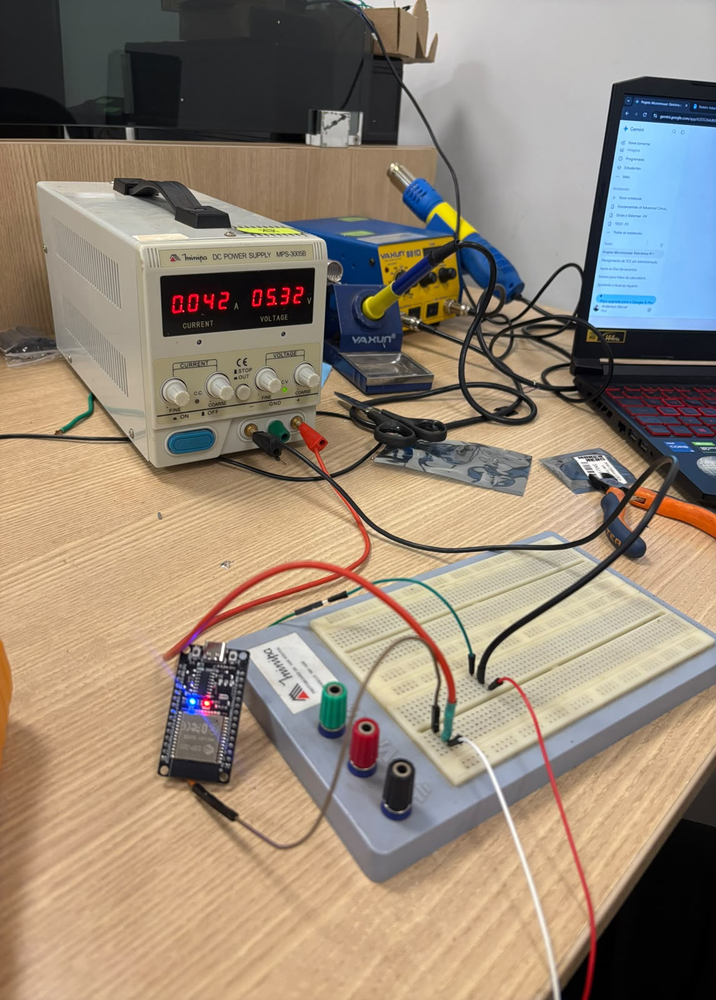
Figura 5: ESP32 pelo VIN a 5,32 V com o código simples, 0,042 A (2.2)
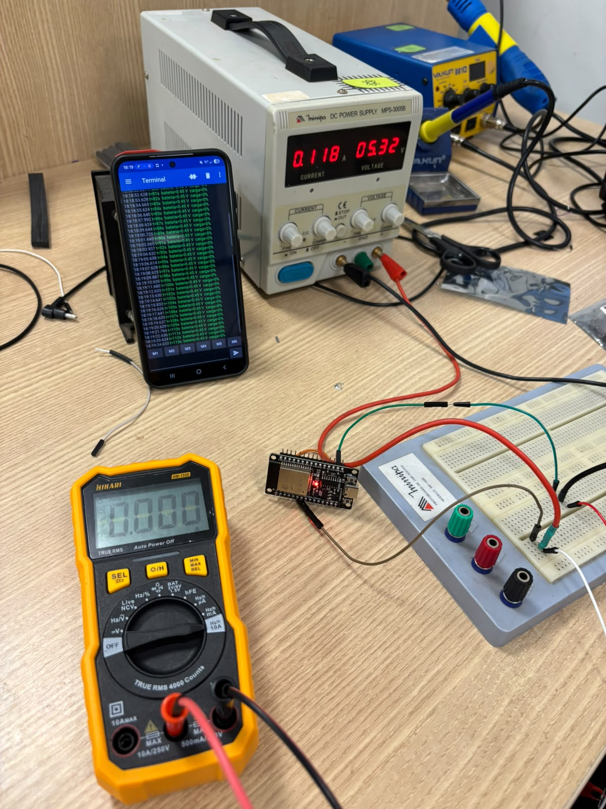
Figura 6: ESP32 transmitindo para o celular, 0,118 A (2.2)
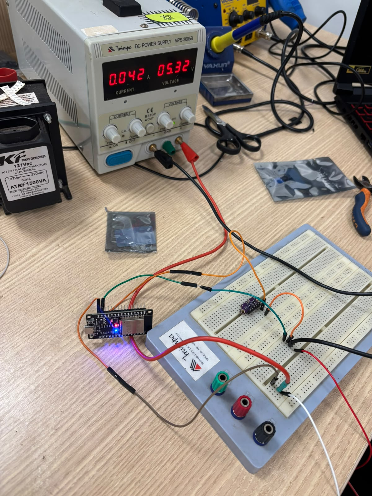
Figura 7: ESP32 com o ToF ligado no pino 3V3, 0,042 A no conjunto (2.2)
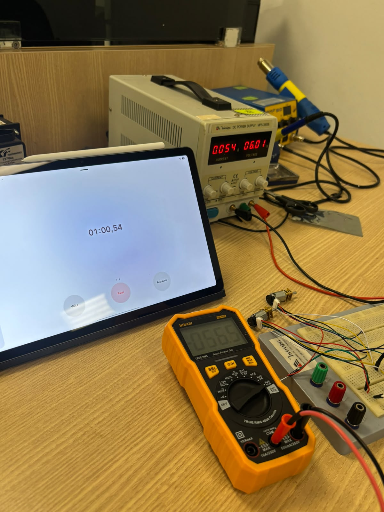
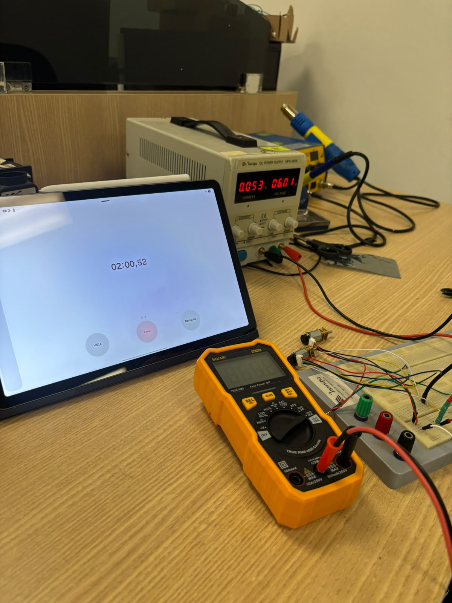
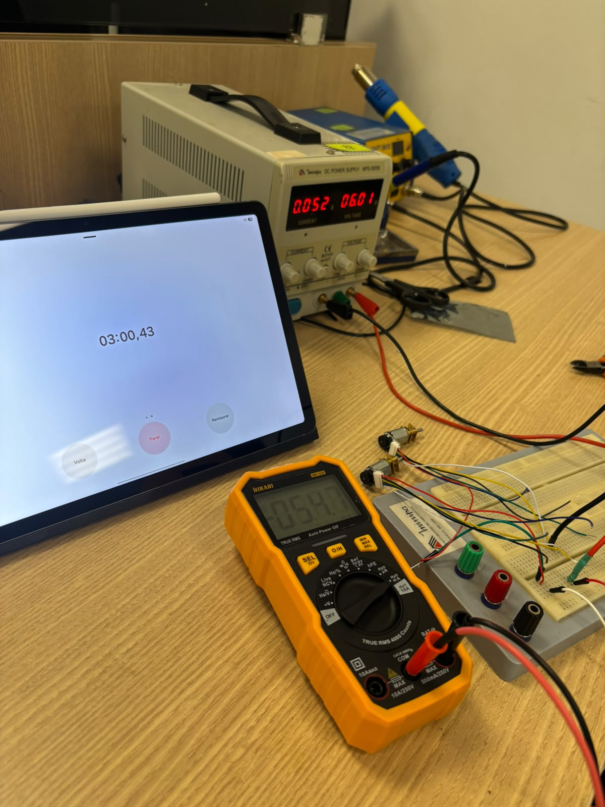
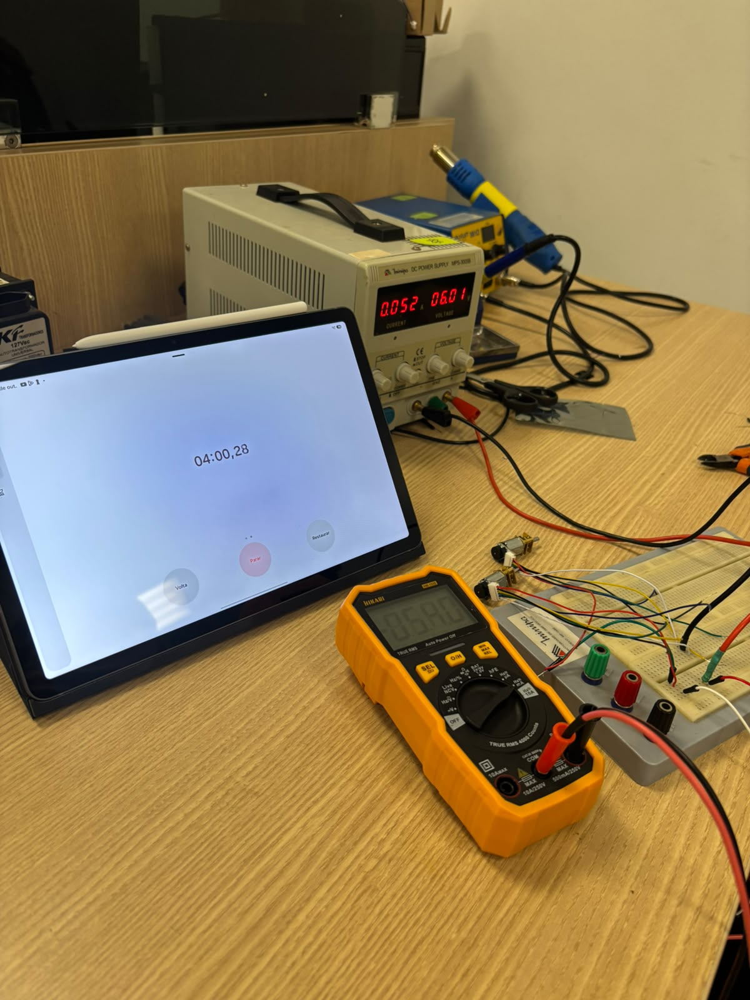
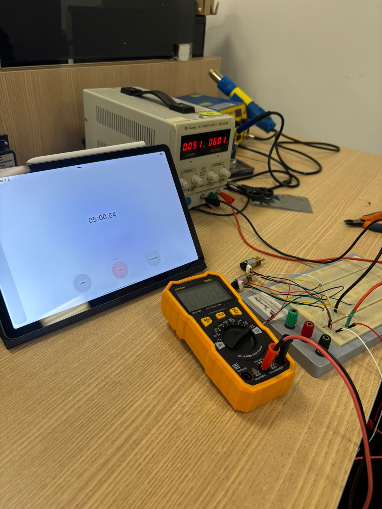
Figura 8: Os dois motores a 6,01 V, de 1 a 5 min: 0,054, 0,053, 0,052, 0,052 e 0,051 A (2.1)
Histórico de Versões¶
| Versão | Data | Descrição | Autor(es) | Revisor(es) | Detalhes da revisão |
|---|---|---|---|---|---|
| 1.0 | 17/10/2026 | Planejamento dos testes de energia: um teste por requisito (RF01 a RF07 e RNF01 a RNF04), testes previstos no projeto conceitual, procedimentos e numeração de 2.1 a 2.16 corrigida #167. | João Marcos Moraes de Andrade, Giovana Martins de Brito | — | — |
| 1.1 | 22/10/2026 | Lista reduzida aos cinco testes essenciais, a pedido da professora: curva de descarga com os motores girando, consumo de cada componente, regulação, polaridade e divisor, medidos numa única ida ao laboratório; gráfico e contas gerados a partir das leituras em CSV. | João Marcos Moraes de Andrade, Giovana Martins de Brito | — | — |
| 1.2 | 22/10/2026 | Alternativa com fonte de bancada para o teste 2.1, caso a LiPo não chegue: curva de tensão emulada em degraus, motores num canal à parte a 6,0 V e coluna corrente_motores_A no CSV. |
João Marcos Moraes de Andrade, Giovana Martins de Brito | — | — |
| 1.3 | 24/10/2026 | Resultados da execução de 24/10/2026 com o roteiro adaptado (fonte de bancada no lugar da LiPo e dos reguladores): polaridade, consumo do ESP32 e do ToF e corrente dos motores por 5 min, com a corrente da bateria e a autonomia estimadas pela potência. | João Marcos Moraes de Andrade, Giovana Martins de Brito | — | — |